Redesigning the repair journey of broken assistive technology at iHOPE, a NYC special education school for students with brain injuries.
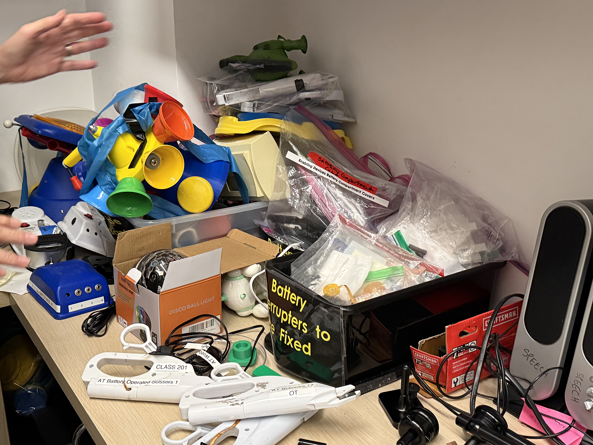
Freeing iHOPE's AT team from the repair bench — by building a structured, volunteer-powered fix service that actually sticks.
iHOPE's Assistive Technology team is the heartbeat of the school — evaluating, adapting, and training students on the devices that give them voice, movement, and independence. But broken devices were consuming hours each week. We were asked to fix the repair pipeline. What we found was a deeper problem: the wrong people were doing the soldering.
iHOPE's AT team spends significant time repairing broken devices instead of supporting students. We redesigned the repair journey by creating the AT Hacker Group — a structured, volunteer-powered repair service that frees the AT team to focus on what matters most: the kids.
iHOPE & the Assistive Technology Team
The International Academy of Hope is a specialized private school in New York City serving students ages 5–21 with Traumatic Brain Injury (TBI), Acquired Brain Injury (ABI), and other brain-based disorders. What distinguishes iHOPE is its foundational philosophy: decisions are made by an educational team — not a medical hierarchy — with a focus on adaptation and participation.
"No readiness." Students don't need to reach any cognitive prerequisite before learning with assistive technology. Every student gets access to AT from day one.
The AT team sits at the center of everything. With 5–6 members each managing roughly 10 students, they serve as the bridge between teachers, therapists, paraprofessionals, students, families, and external vendors. Their role spans eight distinct responsibilities:
"The body shouldn't be a handcuff to their heads."
Gretchen Hanser, Director of AT & Literacy Instruction
This quote is the foundation of iHOPE's work — and the lens through which we understood the stakes of every hour lost to repair work.
A Broken Bin That Never Empties
The Assistive Technology team manages a constant flow of broken devices — communication boards, switches, eye-gaze systems, specialized keyboards — each unique to the student using it. Three pain points formed the core of the problem.
The broken bin fills at 4–5 devices per week on average, and up to 6–10 during peak periods. Devices pile up faster than they can be addressed.
The AT team are the only people with the knowledge and tools to fix broken devices. No one else in the school can step in, even for simple repairs.
Teachers and paras want to help but can't. Guidelines exist but aren't enough. Each student uses different tools — and some devices cost $800+, too expensive to experiment on.
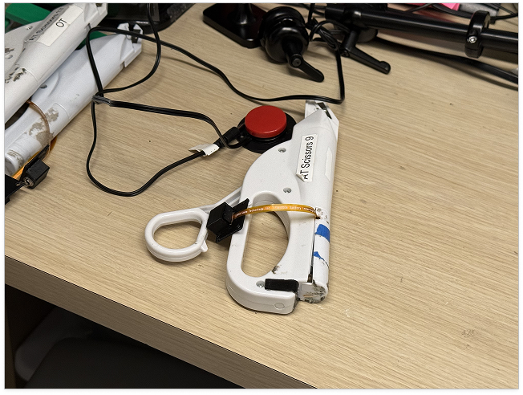
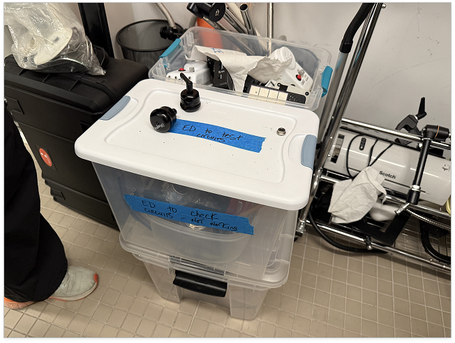
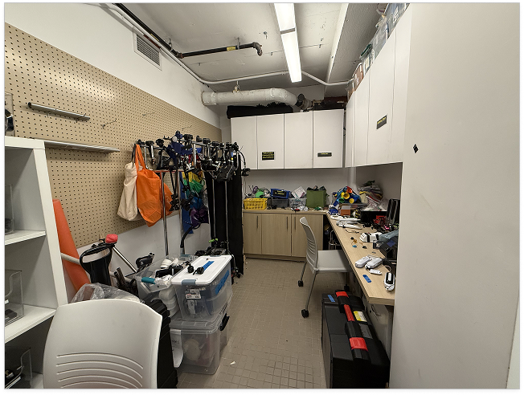
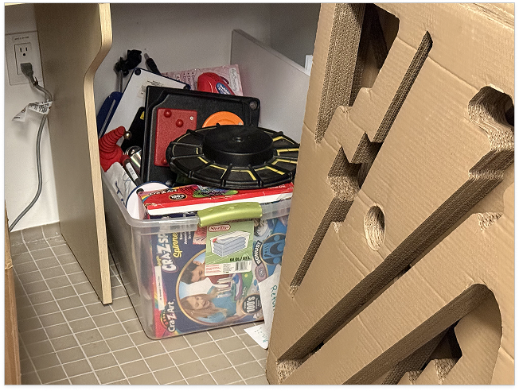
We mapped the entire repair journey, from the moment a teacher borrows an AT device from the cabinet to (ideally) its return to the classroom. The process involves a QR code form, an AT station visit, and a weekly rotation where one AT team member checks the broken bin. Some devices are resolved quickly. Many are not.
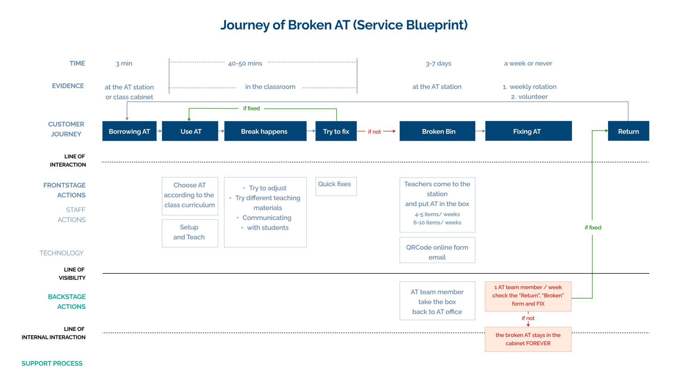
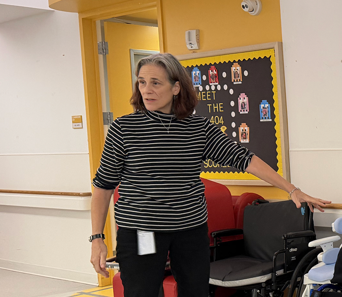
"Fixing and soldering is not a good use of time. We need to spend more time with kids!"
Gretchen Hanser, Director of AT & Literacy Instruction
Getting Inside the System
Three key findings shaped everything that followed:
"It's a lot of investment and work on our time to train people who will come once or twice."
iHOPE AT team member
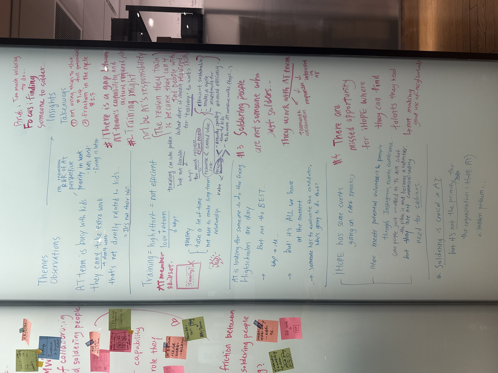
Themes & insights whiteboard from synthesis session
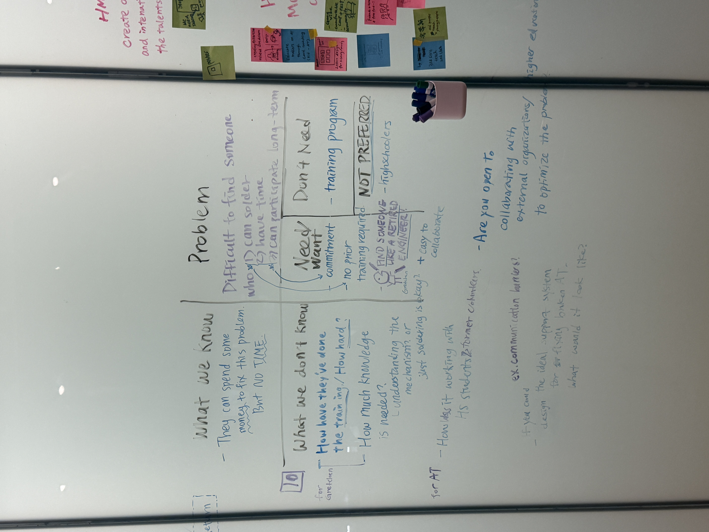
Problem framing — the "retired engineer" discovery
Naming the Real Problem
Our stakeholder mapping placed the AT team at the center of a dense network: students, paras, teachers, therapists, vendors, government bodies, and external organizations all depending on them. The fix-solder role sits at the outer edge of their core mission — but without a better system, it consumes the center.
How might we create a reliable, skilled, and low-barrier repair support system so the AT team can spend more time with students?
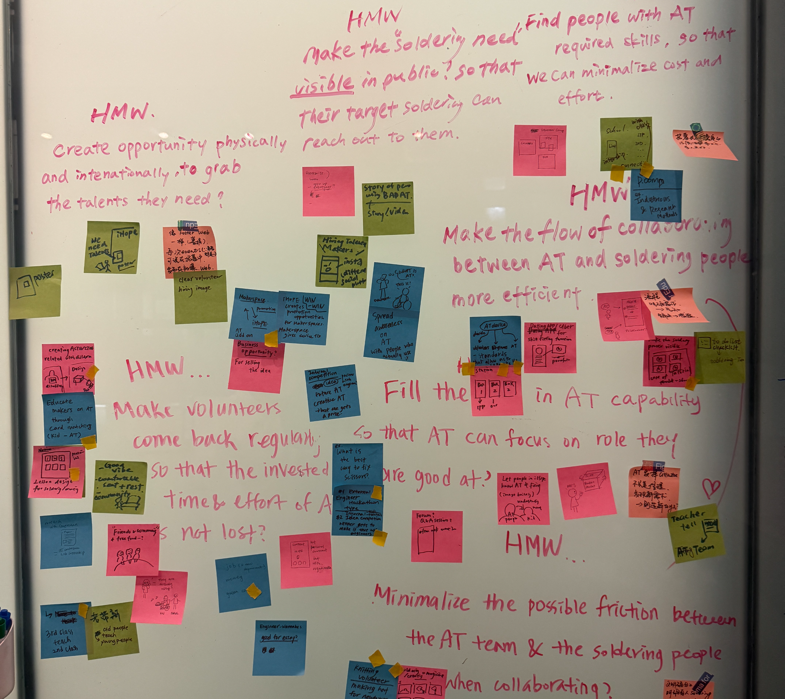
HMW ideation session — exploring how to restructure the volunteer repair model
The AT Hacker Group
The AT Hacker Group is a structured, volunteer-powered repair service built around three design principles: skill matching, long-term commitment, and volunteer-powered capacity. Unlike ad-hoc volunteer efforts, it's designed to work because of its structure — not despite the lack of one.
Volunteers are undergraduate students — starting with SVA, scalable to NYU and Columbia — interested in electronics, design, and social impact. Crucially, they receive paid compensation. This changes the volunteer relationship from charity to collaboration.
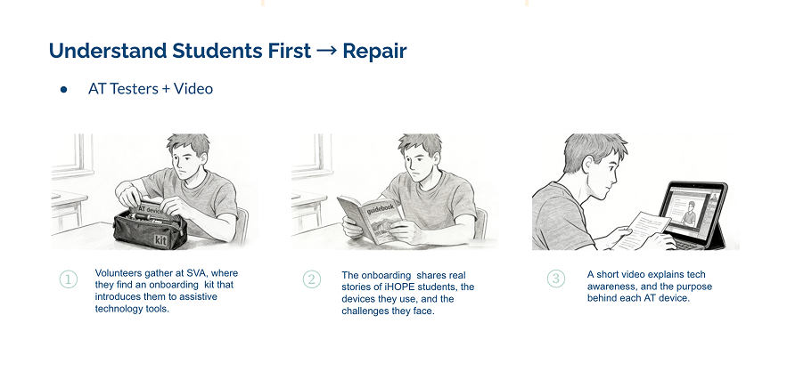
A structured onboarding session (at SVA, minimal travel friction) gives volunteers two things: an AT Basics Guidebook covering disability awareness and iHOPE's philosophy, and an AT Tester Kit — a pouch containing commonly-used devices with a video guide explaining how each one is used by students. Volunteers understand the user before they touch the repair.
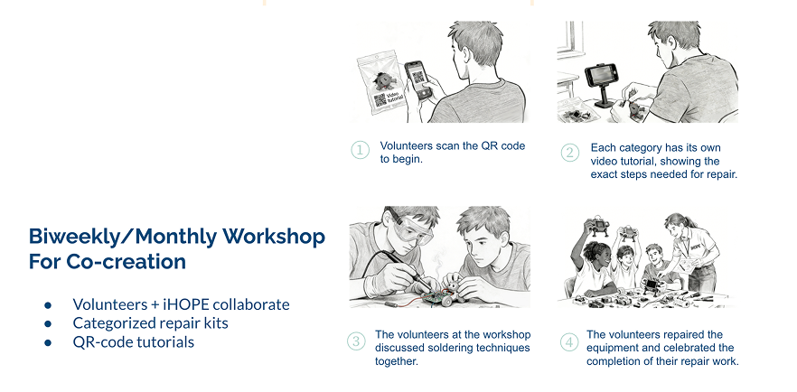
Biweekly or monthly repair sessions at iHOPE. Volunteers arrive with categorized repair kits — broken devices grouped by type, each paired with a QR code linking to step-by-step video tutorials. The format is inspired by kit-based learning: structured enough to self-direct, open enough to tinker and innovate.
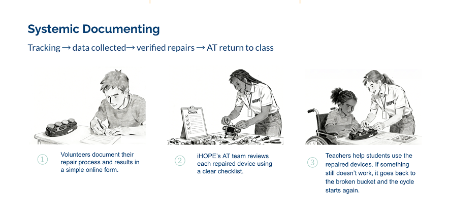
A Notion tracking dashboard logs every device: name, category, issue, status, deadline, assigned volunteer. Volunteers document their repair process; the AT team verifies each fix with a checklist. If it works → back to the classroom. If not → it re-enters the cycle with context, not silence.
Each stage of the AT Hacker Group maps directly back to iHOPE's existing repair process — from the moment a device enters the broken bin to its return to the classroom. Rather than replacing what the AT team already does, the model slots volunteers into the most time-consuming steps, freeing the team to focus on evaluation, adaptation, and student support.

What This Project Taught Us
-
1
The Real Problem Was Rarely the Stated Problem iHOPE came to us with a broken device problem. What we found was a time allocation problem — the AT team's most skilled hours were going to the lowest-value task. Shadowing and immersive research made that visible. A survey never would have.
-
2
The Best Solution Wasn't Technology Every instinct in a design course pushes toward apps and platforms. What iHOPE needed was better human infrastructure — clearer roles, more sustainable incentives, and a feedback loop that kept devices out of the "stays forever" trap. The Notion tracker matters far less than the workshop culture it supports.
-
3
Service Design in Special Education Requires Whole-Ecosystem Empathy We couldn't design for students without designing for the AT team. We couldn't design for the AT team without understanding the school's culture, the volunteer pipeline, and the university ecosystem. A solution that works for one node but burdens another isn't a solution — it's a problem relocation.
Test the onboarding kit with real volunteers earlier in the process. Co-design the Notion tracker with the AT team rather than for them. Explore liability implications of volunteers handling student equipment before proposing the model to administrators.